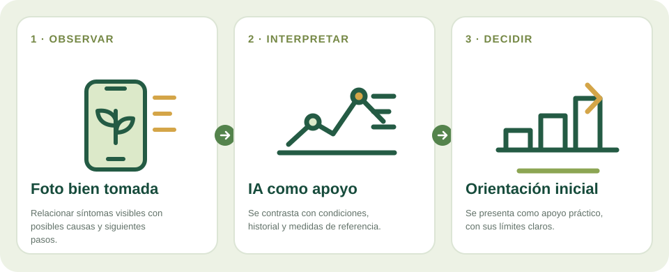

Cómo funciona
La persona toma fotografías claras de la planta y, si puede, añade cultivo, variedad, ubicación aproximada y síntomas. El modelo compara rasgos visuales y devuelve hipótesis, señales observadas y preguntas para completar la valoración.
Una persona agricultora puede enviar una fotografía y recibir una primera orientación sobre señales que merece la pena comprobar.
Servicio digital en evolución · resultado orientativoCómo puede convertirse una señal en información útil

Cuando una planta presenta manchas, amarilleo o deformaciones, cuesta decidir qué información reunir antes de pedir ayuda.
La persona toma fotografías claras de la planta y, si puede, añade cultivo, variedad, ubicación aproximada y síntomas. El modelo compara rasgos visuales y devuelve hipótesis, señales observadas y preguntas para completar la valoración.
Preparar una consulta más ordenada, registrar episodios y sugerir comprobaciones prudentes. La IA puede orientar qué observar o qué datos aportar al técnico, no sustituye una inspección ni un análisis cuando son necesarios.
Servicio digital de entrada para agricultores, con uso limitado gratuito y opciones de seguimiento o derivación técnica. El alcance y los límites deben quedar visibles desde el primer resultado.
La calidad de imagen y el contexto influyen en el resultado; enfermedades, plagas, carencias y daños ambientales pueden parecerse. No aplicar tratamientos basándose solo en una respuesta automática. Si hay impacto económico o propagación, consultar a un técnico agrícola.
Visita la app agroclimática o vuelve a las líneas de investigación para conocer el resto de áreas.
La información de esta página describe una línea de investigación o desarrollo; no supone que exista un producto validado para todos los cultivos. Toda orientación técnica se contrasta con datos de campo y asesoramiento profesional cuando procede.